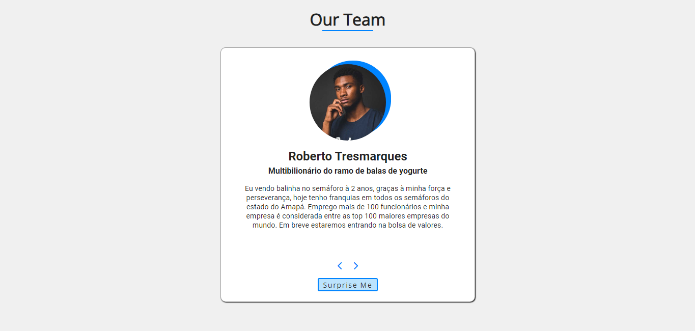

Açougue Bumba
(Projeto desenvolvido em tutorial) Nesse projeto, criei cards ordenados com um botão para receber um card aleatório.
As habilidades trabalhadas:
- Manipulação do DOM com Javascript;
- Randomização;
- Arrays.
(Projeto desenvolvido em tutorial) Nesse projeto, criei cards ordenados com um botão para receber um card aleatório.
As habilidades trabalhadas:
(Projeto desenvolvido em tutorial) Um menu com opção de filtros, criando diferentes amostragens.
As habilidades trabalhadas:
Uma tela de login simples.
Habilidades trabalhadas:
Oi, tudo bom?
Sou um web-developer in development, apaixonado pelo assunto e estudando bastante!
Sobre mim, posso dizer que sou um cara focado 😄
Tenho conhecimentos intermediários em HTML e CSS e estou iniciando minha jornada na programaçaõ com Javascript! Também falo um pouco de inglês...
Estou cursando Análise e Desenvolvimento de Sistemas pelo Instituto Infnet. É minha primeira graduação 🤩